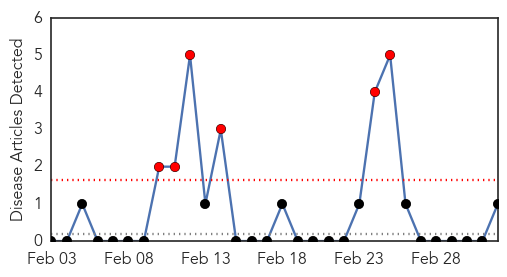
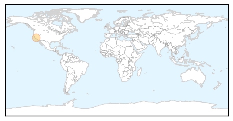
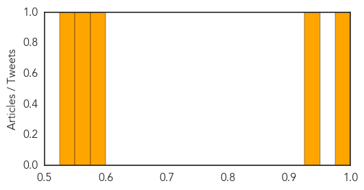

West Nile Virus
30-Day Web Trend
6 alerts, 0 warnings

30-Day Twitter Trend
0 alerts, 0 warnings

Article Locations
Article Confidences

Top Articles:
Top Tweets:
-
No tweets found for Mar 04, 2014
Cholera
30-Day Web Trend
0 alerts, 0 warnings
30-Day Twitter Trend
1 alerts, 0 warnings
Article Locations
Article Confidences
Top Articles:
- 0.993
- 18 die of cholera, 554 affected
- 0.941
- Haiti's cholera epidemic: Immune response
- 0.578
- Tens of thousands in Chad need life-saving assistance after fleeing violence in Central African Republic - Chad
- 0.570
- TENS OF THOUSANDS IN CHAD NEED LIFE-SAVING ASSISTANCE AFTER FLEEING VIOLENCE IN CENTRAL AFRICAN REPUBLIC
- 0.549
- Owning your crisis - aid partnerships in Haiti*
Top Tweets:
- 0.630
- Cholera vaccination in Haiti; First hand retrospective of Fukushima disaster, via. HealthSecurity http://t.co/byWVXzgKhG